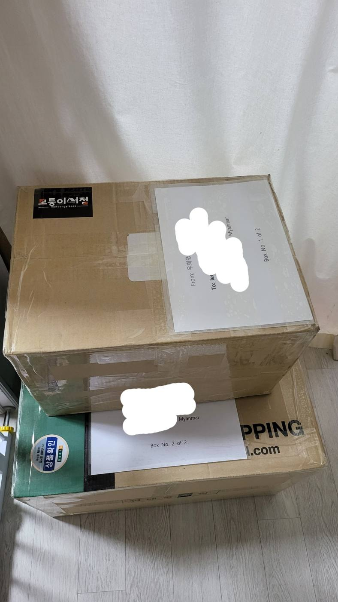
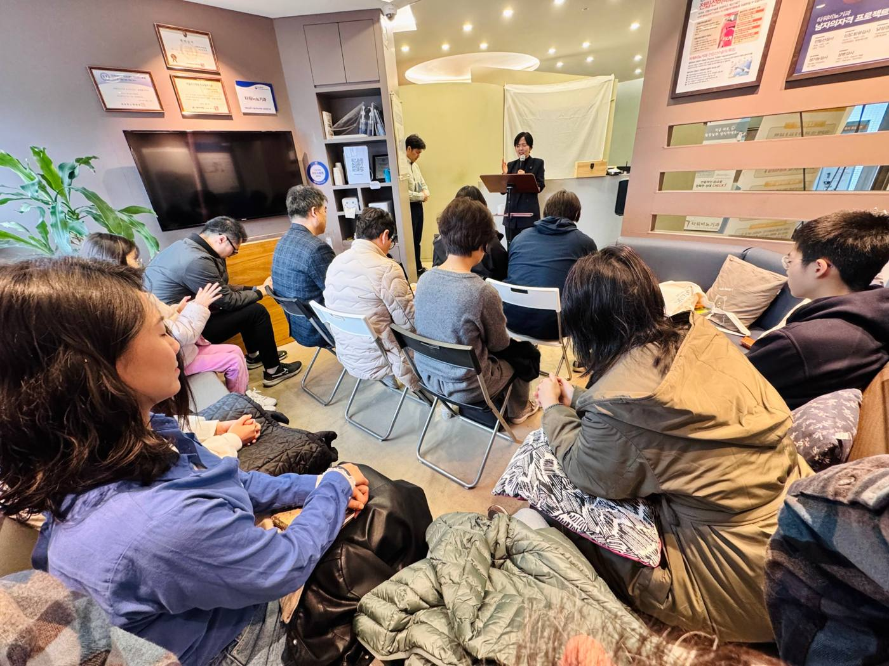
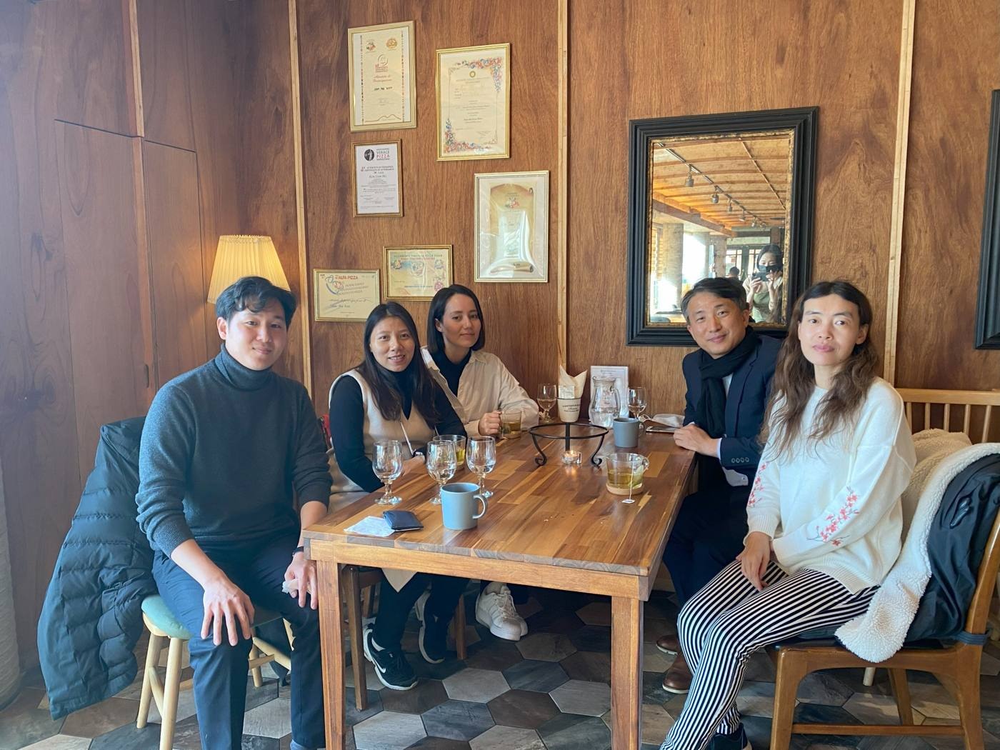

선교
날마다교회는 2021년부터 해외 여러 나라에서 사역하는 협력 선교사님들을 후원하고 있습니다. 미얀마 현지 선교사님을 통해 현지 유치원에 필요한 물품을 지원했으며, 선교사님을 초청하여 말씀 사경회를 열기도 합니다.


구제
구제는 도움이 필요한 이웃에게 하나님의 사랑을 전하는 중요한 사역입니다. 국내는 물론 해외의 이웃들에게도 수술비 지원, 난민 긴급 구호, 탈북민 지원 등 여러 사역을 감당하고 있습니다. 해외 구제는 주로 현지 선교사님들을 통해 이루어집니다.
장학
2021년 11월 첫 장학금 집행 이후, 매 학기가 시작되기 전인 2월과 8월경에 장학금을 지급합니다. 한국에서 공부하는 외국인 유학생들에게도 장학금을 수여하고 있습니다.
